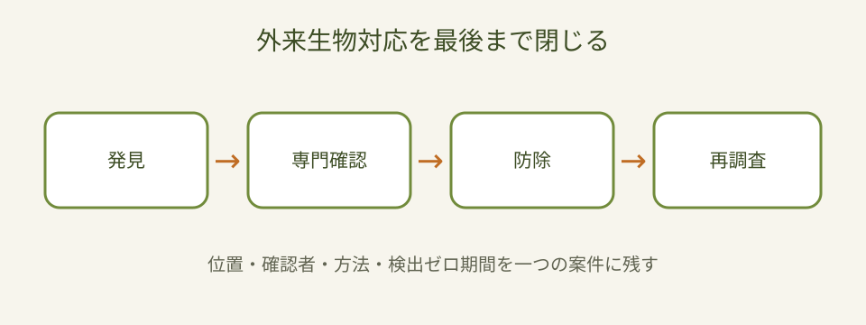

Question Note
外来生物の発見から防除後確認までをつなぐ小規模サービス案

全体像
環境省の令和6年度改定行動計画は、優先度に基づく防除、情報基盤、多主体の役割を重視しています。外来種は早期発見・早期対応が重要ですが、課題は投稿、種の確認、土地管理者への連絡、防除、再調査の記録が切れ、効果を判定できないことです。
どの社会問題を切り出すか
初年度は一つの流域・公園群で自治体、自然保護団体、施設管理者が扱う重点3種に限定します。
| 現場課題 | 結果 | 限界 |
|---|---|---|
| 誤同定が多い | 不要な対応や放置が起きる。 | SNS投稿は確認状態が曖昧。 |
| 土地管理者が不明 | 防除着手が遅れる。 | 電話の転送履歴が残らない。 |
| 再調査が抜ける | 定着・再発を見逃す。 | 表計算は地点と経過を追いにくい。 |
既存の仕組みで足りない点
- 紙や電話は写真、位置、確認者、再調査日を一体管理できない。
- チャットは案件状態と公開範囲を管理しにくい。
- 汎用地図は法的区分、同定確度、防除後の検出ゼロ期間を持たない。
サービス案
重点種の発見を受け、専門確認、管理者連絡、防除、廃棄、再調査まで追う限定公開台帳です。
- 位置・写真・個体数・発見日時を登録する。
- 未確認、要追加写真、確認済みを分ける。
- 土地管理者と防除担当へ割り当てる。
- 防除方法・数量・廃棄・許認可メモを残す。
- 再調査日を通知し、検出ゼロの継続を集計する。
100万円規模に抑えた市場設定
自治体、指定管理者、自然保護団体50組織へ接触し20組織を獲得します。
| 月額 | 4,000円 x 20 x 12 | 960,000円 |
|---|---|---|
| 導入支援 | 10,000円 x 6 | 60,000円 |
| 初年度売上 | 合計 | 1,020,000円 |
収益モデル
- 基本: 組織単位月額
- 追加: 重点種・区域の初期設定
- 追加: 年度防除レポート
必要なシステム要件と支出
| フロント | 写真・地図・状態更新 | 24,000円 |
|---|---|---|
| バックエンド | 案件・種・権限・履歴 | 36,000円 |
| 通知 | 確認・再調査メール | 12,000円 |
| 帳票 | CSV・防除報告 | 18,000円 |
| 運用 | 監視・バックアップ | 36,000円 |
| 専門確認 | 法令・生物同定フロー | 72,000円 |
| 年間支出 | 合計 | 198,000円 |
AIを使った開発見積もり
AIで画面、CRUD、通知、帳票の実装を補助します。画像だけの自動同定は確定判断に使わず、専門家確認を必須にします。
| 要件 | 状態・権限を整理 | 4日 |
|---|---|---|
| 試作 | 地図・写真一覧 | 2週間 |
| 実装 | 通知・履歴・帳票 | 2週間 |
| 検証 | 誤同定・権限テスト | 1週間 |
通常8〜10週間相当を5〜6週間に短縮します。
売上・支出・利益
売上 - 支出 = 利益
| 売上 | 1,020,000円 |
|---|---|
| 支出 | 198,000円 |
| 利益 | 822,000円 |
必要人数と人材要件
実行者1名 + 生物・法務の単発外注。実行者は開発と導入、専門家は同定フロー、防除方法、外来生物法上の表現を確認します。
リスクと最初の検証
- 希少種や私有地情報の公開で被害が出る。
- 誤同定を確定情報として扱う。
- 防除の効果より投稿数だけを成果にしてしまう。
重点3種・30地点・3か月で、確認時間、着手日数、再調査実施率、月額支払い意思を測ります。
結論
同定から防除後確認までを閉じる限定台帳なら、外来種対策の早期対応と効果測定を小さく支援できます。